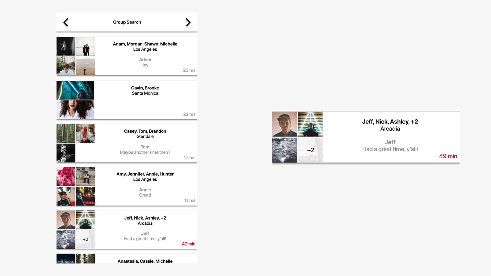
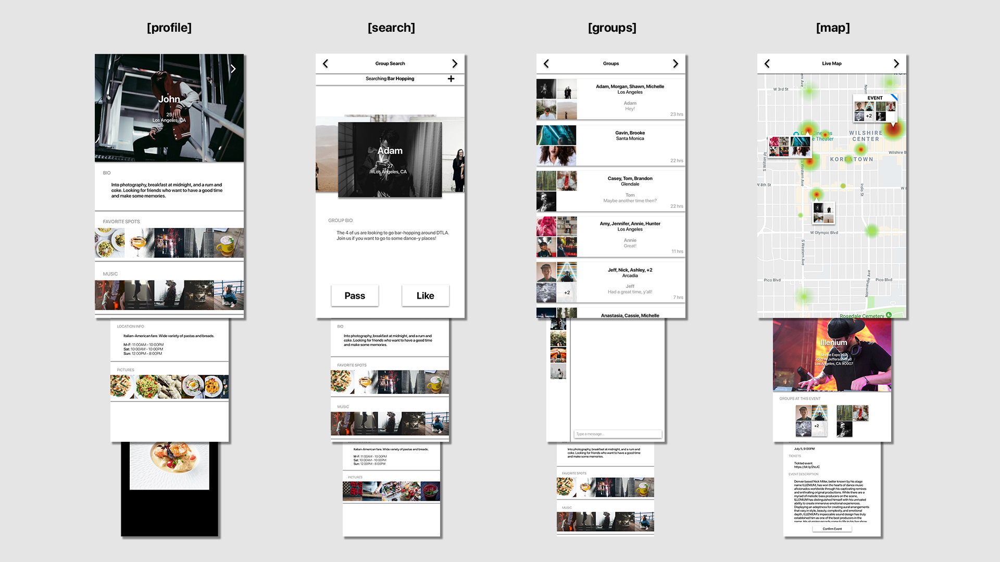
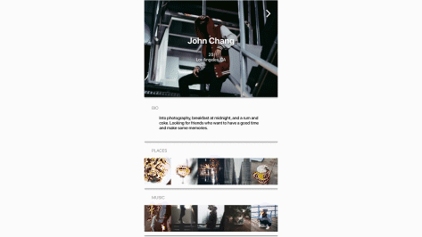

I was first interested in the role of human recognition of spatial orientation and navigation to aid mental models. I applied this to a theoretical friend-finding platform after hearing about difficulties from friends with socializing in new cities after moving.
From a product view, I investigated inherent difficulties with existing apps like users’ mixed motives and apathy. This informed implementation of features like 24 hour time limits and focusing choice to better incentivize action.


Moving away from traditional tabbed layouts, I explored a more uncommon layout in which each major functionality sat on the highest row of pages while subsequent pages flowed downwards. As a result, function and space are interconnected: functions are mapped left-right, depth mapped up-down.
Designing for both first use and 10,00th use was a test in removing as much as possible while emphasizing functionality - for example, entering a different mode (edit profile function) by holding down content blocks instead of creating additional digital artifacts.


This meant the app was holistically designed for quick use to facilitate connection and lead to actual face-to-face interactions - in other words, to get users off the app as quickly as possible and to be actively social.